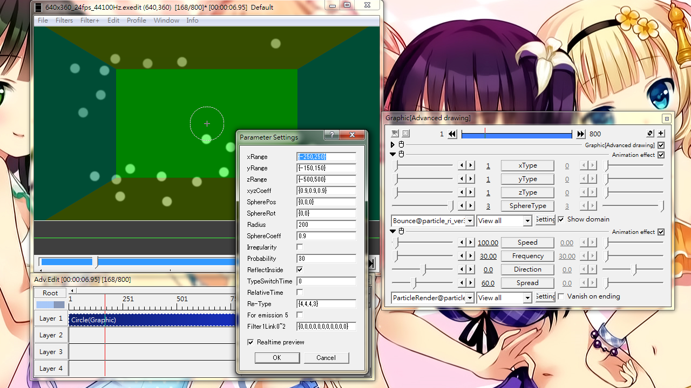
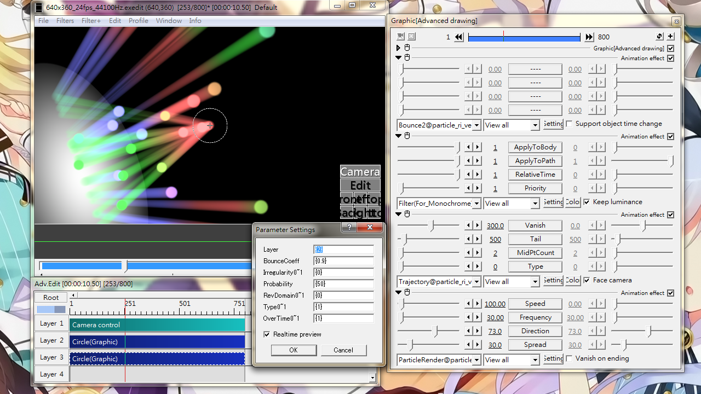
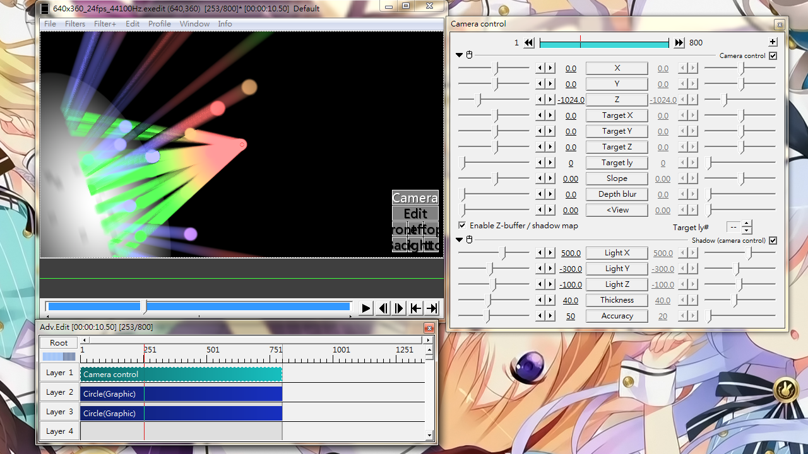

Fig10A: Particles bounce around inside a boxed area using Bounce@particle_ri_ver3. "Show domain" is checked to help visualize the boxed area.

Fig10B: Particles bouncing off a plate (on layer 2) using Bounce2@particle_ri_ver3.The particle object has been excluded from Camera control. Particle tail given by Trajectory@ to help illustrate the incident and emergence path.

Fig10C: Similar to Fig10B except that the particle object is under Camera control with Shadow effect.
Bounce
Make particles to bounce upon hitting some predefined surface. Does not support changing the reflection surface over time.
Sliders
xType
Set the properties of vertical reflection surfaces locate at x=v1 and x=v2 (where v1 < v2)
yType
Set the properties of horizontal reflection surfaces locate at y=v1 and y=v2 (where v1 < v2)
zType
Set the properties of vertical reflection surfaces locate at z=v1 and z=v2 (where v1 < v2)
For xType, yType and zType:
1: reflection surfaces at v1 and v2 are both enabled
2: Only reflection surface at v1 is enabled
3: Only reflection surface at v2 is enabled
4: disable reflection surface at both v1 and v2
SphereType
Set the properties of spherical reflection surfaces
1: reflection surface is a complete sphere
2: reflection surface is a hemisphere
3: disable reflection surface
Check box
Show domain
Visualize reflection surface(s)
Setting dialog
xRange
Reflection planes at x=v1,v2 (v1 < v2)
Input format: {v1,v2}
If only a single value is given, plane at v1 if v < 0, at v2 otherwise.
yRange
Reflection planes at y=v1,v2 (v1 < v2)
Input format: {v1,v2}
If only a single value is given, plane at v1 if v < 0, at v2 otherwise.
zRange
Reflection planes at z=v1,v2 (v1 < v2)
Input format: {v1,v2}
If only a single value is given, plane at v1 if v < 0, at v2 otherwise.
xyzCoeff
Speed coefficient determining the speed of particle after reflection.
1: no speed change; 2: speed is doubled after reflection; 0.5: speed is halved after reflection
Numerical center coordinate for spherical and hemisphere reflection plane.
This can be set visually via anchor points instead.
SphereRot
Rotation angle of hemisphere
Input format: {rotation_along_y,rotation_along_z}
Giving a single number is the same as {0,rotation_along_z}
Radius
Size of reflection sphere and hemisphere
SphereCoeff
Speed coefficient for bouncing off a sphere or hemisphere
Irregularity
Add randomness to reflection direction and speed coefficients
Probability
When Irregularity is enabled, the chance that a particle will have such irregularity.
ReflectInside
When checked, each reflection plane will have infinite area.
When unchecked, only the reflection plane as seen by "Show domain". In other words, a reflection plane is trimmed when intersect with other reflection plane.
No effect on spherical and hemisphere reflection surface.
TypeSwitchTime
Changing interval for each Type.
Value in milliseconds.
No effect if zero.
RelativeTime
Set definition of time-zero for TypeSwitchTime. If checked, time based on each particle.
Re-Type
The final Type after TypeSwitchTime has lapsed.
Input format: {type for z,type for y,type for z,sphere type}
See sliders description for details in the types.
For emission 5
When using with Emission@ and set to type 5, treat the boxed area as reflection surface.
Filter1Link0~2
Set changes to Filter@ (VarVal1) or Filter(For_monochrome)@ matching the time of reflection.
For example, if Filter@ (Blur) → Filter@ (Color shift) → Filter(For_monochrome) is attached, and I want to change the Color shift behaviour upon reflection, input {0、1、0、0、0、0、0、0、0、0}
Valid values are 0,1 and 2
0: Do not change on reflection
1: Starts changing upon first reflection. No change if no reflection occurs
2: Transition finish upon first reflection
Bounce2
Make particles bounce off from surface(s) defined in other layers.
Temporal changes in size and transparency of the reflection surfaces are not supported.
Only temporal changes in X, Y, Z, SpinX, SpinY and SpinZ of the reflection surface are supported.
The object defining the surface must have the same duration as the particle object.
Do not attach the build-in effect "Emission" to the reflection surface!
Check box
Support object time change
When checked, temporal change of the reflection surfaces (position and spin) will be taken into account. Processing will get very heavy if enabled.
Setting dialog
Layer
Set the layers defining reflection surfaces.
{layerID[1],layerID[2],...,layerID[n]}
BounceCoeff
Speed coefficients for each surface.
{Coeff for surface 1, Coeff for surface 2,..., Coeff for surface N}
Assume all 0.9 if omitted.
Irregularity0~1
Decide if randomness should be introduced when bouncing off each surface.
{surface 1 ON/OFF, surface 2 ON/OFF,..., surface N ON/OFF}
0: No randomness; 1: Randomize
Assume 0 if omitted.
Probability
The chance of introducing randomness when bouncing off each surface.
{P(surface 1),P(surface 2),...,P(surface N)}
0: No randomness at all; 0.5: Half the particles will be randomized; 1: All randomized
RevDomain0~1
Invert surfaces' reflecting area. If previously an opaque area is reflecting particles, area outside this region will be reflecting only when set to 1.
{surface 1 ON/OFF, surface 2 ON/OFF,..., surface N ON/OFF}
Assume 0 if omitted.
Type0~1
Enable (1) or disable (0) a surface
{surface 1 ON/OFF, surface 2 ON/OFF,..., surface N ON/OFF}
Assume 1 if omitted.
OverTime0~1
When using with Bounce@, set the surface type after TypeSwitchTime
{surface 1 type,surface 2 type, ... ,surface N type}